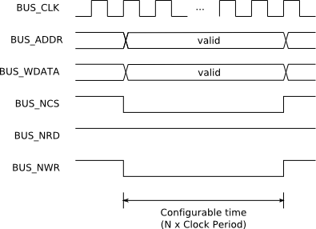
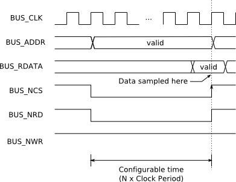

UART_DEBUG Functional Description
LP-CORES/upc_interface
$Id: uart_debug.t2t,v 1.3 2008/01/18 17:55:52 paulo Exp $
1. Block Diagram

2. Communication Protocol
2.1. Read
Command: R<offset>E
Answer: <value>\r
2.2. Write
Command: W<offset>:<value>E
Note: offset and value are in hexadecimal format.
3. Read/Write Access Timing
3.1. Write Operation

3.2. Read Operation

3.3. Testbench
3.3.1. Modelsim TCL Scripts Usage
# Loads TCL scripts
source uart_debug.tcl
# Sends a write command
uart_hex_wr <offset> <data> # offset and data are in hex format (example: uart_hex_wr 80F0 8D3F)
# Sends a read command
uart_hex_rd <offset> # offset is in hex format (example: uart_hex_rd 804F)